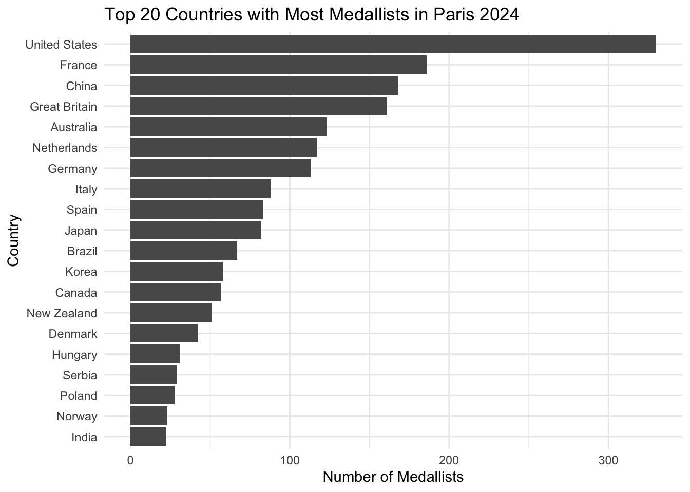
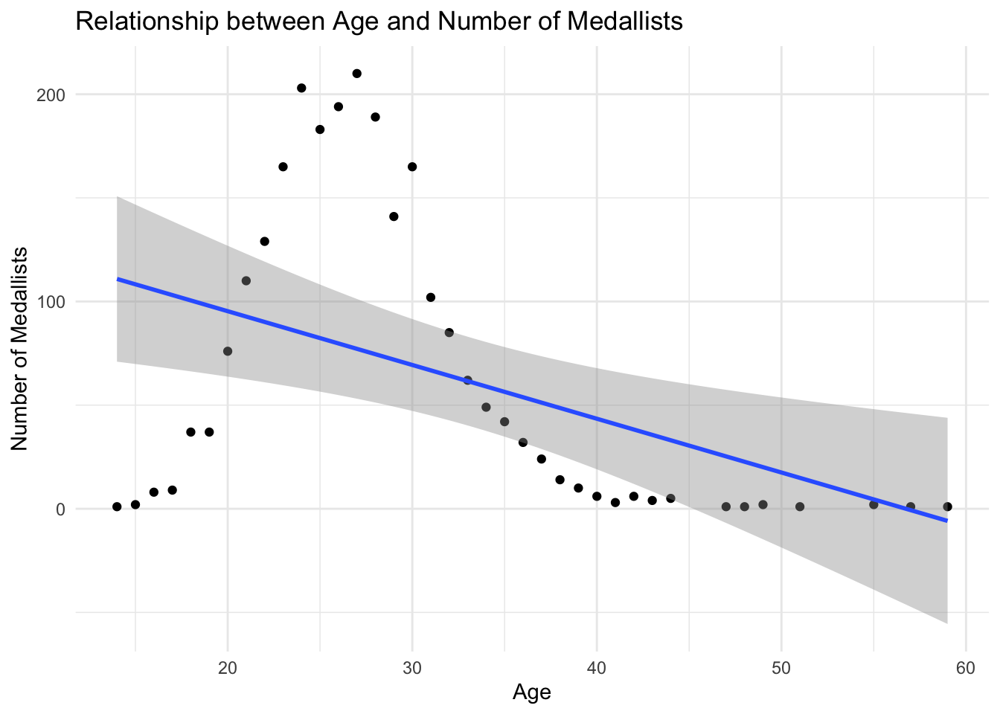
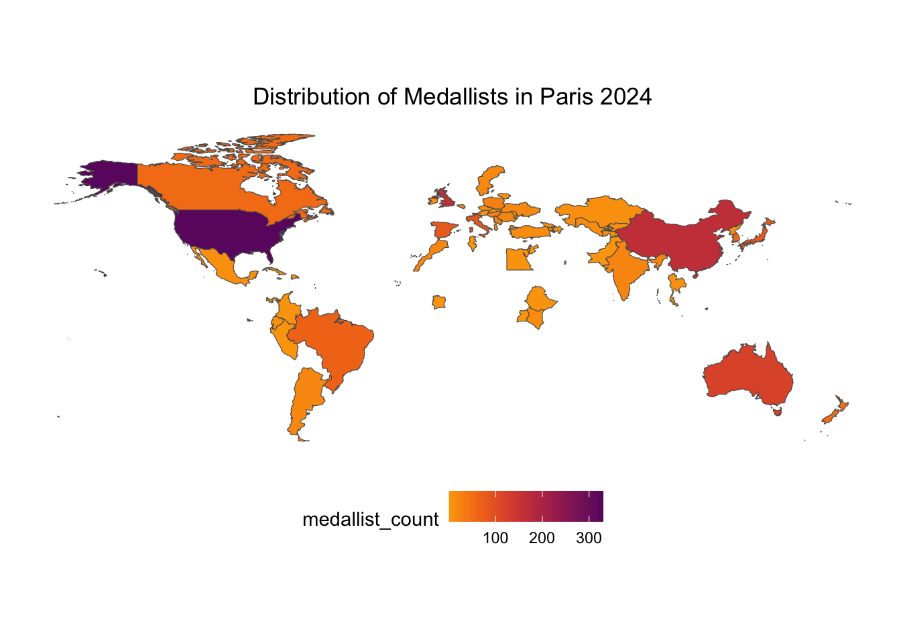

We will use a bar chart to show top 20 country with most medallists in Paris 2024.
df_clean |>group_by(country) |>summarise(medallist_count =n()) |>arrange(desc(medallist_count)) |>head(20) |>1ggplot(aes(x =reorder(country, medallist_count), y = medallist_count)) +2geom_col() +3coord_flip() +labs(title ="Top 20 Countries with Most Medallists in Paris 2024",x ="Country",y ="Number of Medallists") +theme_minimal()
1
Use reorder() to reorder countries based on the number of medallists.
2
Use geom_col() to create a bar chart.
3
Use coord_flip() to flip the x and y axes because we want to show the countries on the y-axis for better readability.

Note
Why do we need to “reorder()” even if we have already used “arrange()”? 1. arrange(): This function reorders the rows of the data frame based on a variable, but it doesn’t change the internal ordering of factor levels in R. Factor levels determine how categorical variables (like country) are displayed on the plot’s axes. 2. reorder(): In the aes() function of ggplot(), reorder(country, medallist_count) specifically reorders the factor levels of country based on the values of medallist_count. This ensures that when plotting, the countries with the highest medallist_count are shown in the order you want on the x-axis (or y-axis).
Scatter Plot
We will use a scatter plot to show the relationships between the number of medals and the age of the medallists.
df_clean |>mutate(age =2024-year(birth_date)) |>filter(is.na(age) ==FALSE) |>group_by(age) |>summarise(medallist_count =n()) |>1ggplot(aes(x = age, y = medallist_count)) +2geom_point() +3geom_smooth(method ="lm") +labs(title ="Relationship between Age and Number of Medallists",x ="Age",y ="Number of Medallists") +theme_minimal()
1
Use aes() to specify the x and y variables.
2
Use geom_point() to create a scatter plot.
3
Use geom_smooth(method = "lm") to add a linear regression line to the plot.
`geom_smooth()` using formula = 'y ~ x'

World map
Use a world map to show the distribution of medallists in Paris 2024.
Here we will use two packages: rnaturalearth and rnaturalearthdata to get the world map data. The rnaturalearth package provides access to the Natural Earth dataset, which contains a variety of geospatial data, including country boundaries. The rnaturalearthdata package contains the data files needed to create maps using the rnaturalearth package.
library(rnaturalearth)library(rnaturalearthdata)
1
Use ne_countries() to get the world map data. The scale parameter specifies the level of detail for the map, and the returnclass parameter specifies the class of the returned object (in this case, a simple features object).
Attaching package: 'rnaturalearthdata'
The following object is masked from 'package:rnaturalearth':
countries110
df_clean |>group_by(country_code) |>summarise(medallist_count =n()) |>1left_join(world, by =c("country_code"="iso_a3")) |>2ggplot() +3geom_sf(aes(fill = medallist_count, geometry = geometry)) +4scale_fill_viridis_c(option ="B", direction =-1, begin =0.3, end =0.8) +labs(title ="Distribution of Medallists in Paris 2024") +theme_bw() +theme(panel.grid.major =element_blank(), # Remove major grid linespanel.grid.minor =element_blank(), # Remove minor grid linesaxis.text =element_blank(), # Remove axis textaxis.title =element_blank(), # Remove axis titlesaxis.ticks =element_blank(), # Remove axis tickspanel.border =element_blank(), # Remove panel border if desiredplot.background =element_rect(fill ="white", colour =NA), # Set plot background colorlegend.position ="bottom", # Adjust legend positionplot.title =element_text(hjust =0.5) # Center the plot title )
1
Use left_join() to join the world data with the df_clean data based on the country_code and iso_a3 columns. iso_a3 is the ISO 3166-1 alpha-3 country code, such as “USA” for the United States.
2
Use ggplot() to create a plot.
3
Use geom_sf() to create a map. The fill aesthetic is set to medallist_count to color the map based on the number of medallists in each country. The geometry aesthetic specifies the geometry column in the world data, which means the map will be drawn based on the country boundaries.
4
Use scale_fill_viridis_c() to set the color scale for the map. The option parameter specifies the color palette, direction specifies the direction of the color gradient, and begin and end specify the color range.

Note
geom_sf is a function in the ggplot2 package used to visualize simple features (spatial data) in R. It is specifically designed to handle geospatial objects, such as polygons, points, and lines that represent geographic data. The “sf” stands for simple features, a standard way to encode spatial vector data.